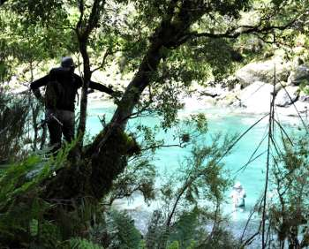
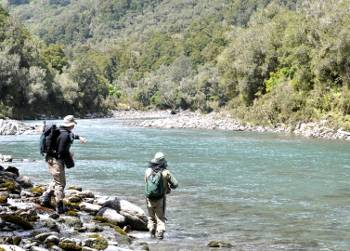
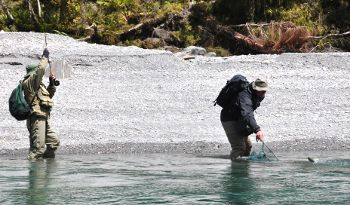
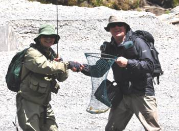

釣行日誌 ＮＺ編 「翡翠、黄金、そして銀塊」
ヘリフィッシング、初の１尾
2010/11/23(TUE)-2
鰐部さんが最初の１尾を釣ったポイントから、再び鱒を探しての遡行が始まる。ディーンは岸沿いの高場の上、原生林の真ん中をずいずいと歩いて上流へと向かう。少し上流で、またディーン君が鱒を見つけた。いよいよ僕の番である。そこは荒瀬の下流で、またまた長いトロ場になっているポイントであった。

どうやら鱒は水中の餌を狙っているらしく、ディーンがニンフを選んでくれた。僕の手持ちのニンフはどうもかんばしくないようで、ディーンが自分のフライボックスの中から必殺の緑色のニンフを選び出した。これなら釣れそうだと思った。
ディーンの指示のとおり、鱒の居着いている所の1.5mほど上流を狙ってニンフを打ち込む。数回のトライの後で、ようやく狙ったポイントにニンフが落ちる。流下、そして沈降。ディーンの「ストライク！」の声。間髪を入れずロッドを立てると、あのずっしりとした感触がラインを通じて伝わってくる。掛けたのだ。急いで余分なラインを巻き込み、リールでのファイトに持ち込む。鱒は下流へ突進し、ぐねぐねと身を反転して抵抗する。そうはさせじとロッドを高く掲げてやりとりをする。と、どうしたことかいきなり感触が無くなり、ラインが力無く垂れ下がる。
『あーっ、バラしたぁっ！』
心の中で叫んでみるものの、後の祭りである。ニンフが小さめだったので、フッキングが十分でなかったらしい。合わせが弱いのは僕の悪い癖である。一日の最初の１尾をばらすと、その日の釣りはどうもうまく行かないのがジンクスなのであるが......。とはいえ、それほど落胆することなく、次の１尾を狙おうという気持ちに素早く切り替え、三度目のヘリフィッシング→ボウズ！の懸念を追い払う。
再び遡行が始まり、三人は上流へと静かに移動してゆく。途中、ブルーダックが水辺で羽繕いをしているのを目撃した。
また現れた長い淵のトロ場で再びディーンが鱒を発見した。まだ僕が最初の１尾を釣っていないので、ディーンとカツは今度も僕に釣らせてくれた。

今度も先ほどと同じニンフを使って狙う。左利きの僕にとって、右岸側を釣るのは利き腕が逆になって釣りにくい。しかしそんなことも言っていられないので黙々と釣る。矢継ぎ早に出るディーンの指示に従いキャストを繰り返す。キャスト、そしてストライク。しかし、最初の疾走でまたしてもバレてしまった。ボウズの懸念が現実化してきて、いささかプレッシャーを感じ始める。
サンドウィッチとジュースとで手早くランチを終え、再び幾つもの淵を越えて歩いてきた三人は、とある瀬でディーンと僕が左岸側へと渡り、カツは今まで通りに右岸側を釣ることとなった。太陽も高く昇り、ドライフライの可能性も出てきた。だいぶ遡行してきて、両岸に大岩が現れ、素晴らしい渓相になってきた。しばらく遡行を続けていると、対岸をブラインドで探っていたカツが、沈み石がゴロゴロしているポイントで１尾掛けた。ファイトの様子から見るに良型らしい。ランディングネット無しで上手に取り込んだ鱒は、やはり60cmぐらいのブラウンであった。こらえようと思うのだが、羨望の心がざわざわと騒ぐ。
『鰐部さん、いいなぁ......』
その後で出くわしたポイントは、あまり大きな淵ではなかったが、魅力的な流れ込みと深瀬が続いており、いかにも何か居そうな雰囲気の場所であった。あまり深くないポイントなので、ニンフをロイヤルウルフに交換し、深瀬の尻から狙ってゆく。今度は鱒を見つけてからのサイトフィッシングではなく、それらしいポイントをブラインドで探ってゆく戦法で釣ってみることにした。三投目あたりで水中で何かが煌めいた。鱒だ。バクバクし始めた心臓の鼓動を押さえつつ、再度フライを投射する。水面に落ちた茶色のハックルが１メートルほど流下した所で黒い頭が水面を割る。１、２、３。早合わせになることなく、しっかりとタメを入れて合わせる。グイという鱒の引き。今度はバラさないぞと自分に言い聞かせ、魚とのファイトに持ち込む。ヒットしたブラウンはそれほど大きくなかったが、流れに乗ってグングンと引き、６番のクリアークリークフライラインが水面を走る。下流の流れ込みに突進されないよう気を付けてやりとりを行い、闘いの主導権を握る。やがて鱒が疲れてグネグネと反転を始めたので、ロッドを左に寝かせて浅瀬に誘導する。下流からネットを持って近づいて来たディーンがすかさずランディングする。

「やったーっ！ ヘリで来て初めて１尾釣ったーっ！」
魚はそれほど大きくなかったが、ヘリフィッシング三度目にして初めて釣り上げた１尾だけあり、感慨と興奮はひとしおであった。ディーンが右手を差し伸べてくれて、がっしと握手をする。ありがとう、ディーン君。

初日の最初の１尾、ヘリでの最初の１尾を釣り上げたので、肩の荷を下ろしたように楽になり、同じポイントでやや大きめの魚をまた釣ることができた。さらに少し上流にあった荒瀬の流れ込みでは、なかなかのサイズをロイヤルウルフで掛けて、十分にファイトを堪能した。
釣行日誌ＮＺ編 目次へ
サイトマップ
ホームへ
お問い合わせ